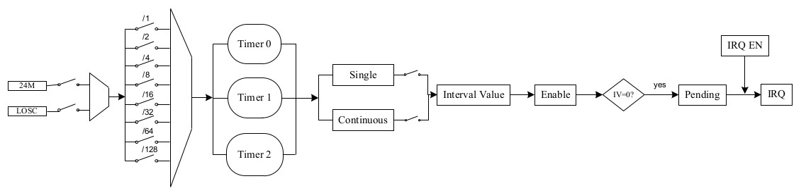
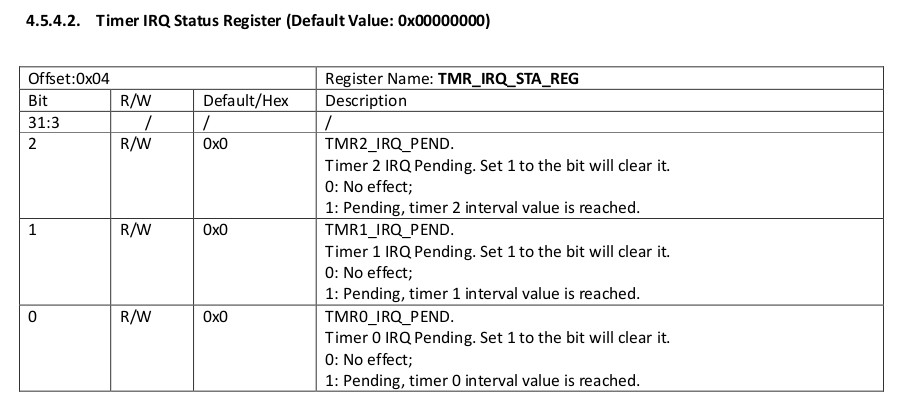
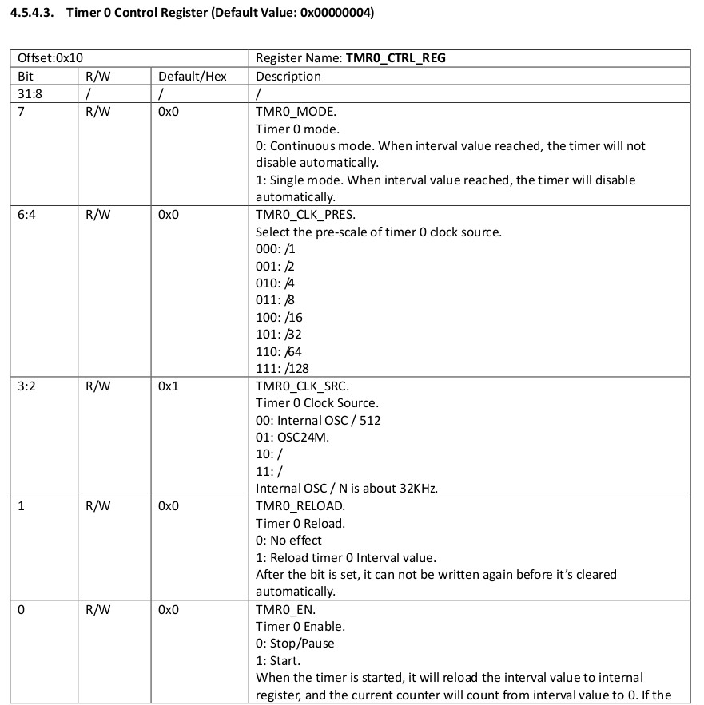
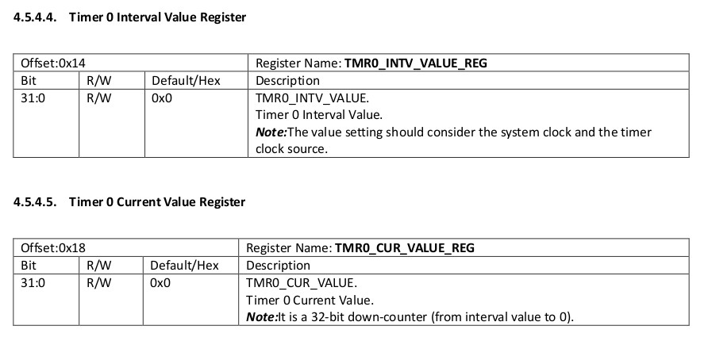

參考資訊：
https://github.com/steward-fu/website/releases/download/datasheet/allwinner_s3_rm.pdf
方塊圖





.global _start
.equ GPIO_BASE, 0x01c20800
.equ TIMER_BASE, 0x01c20c00
.equ PG, (0x24 * 6)
.equ TMR_IRQ_STA_REG, 0x04
.equ TMR0_CTRL_REG, 0x10
.equ TMR0_INTV_VALUE_REG, 0x14
.equ TMR0_CUR_VALUE_REG, 0x18
.equ CFG1, 0x04
.equ DATA, 0x10
.arm
.text
_start:
.long 0xea000016
.byte 'e', 'G', 'O', 'N', '.', 'B', 'T', '0'
.long 0, __spl_size
.byte 'S', 'P', 'L', 2
.long 0, 0
.long 0, 0, 0, 0, 0, 0, 0, 0
.long 0, 0, 0, 0, 0, 0, 0, 0
_vector:
b reset
b .
b .
b .
b .
b .
b .
b .
reset:
ldr r0, =GPIO_BASE
ldr r1, =0x11111111
str r1, [r0, #(PG + CFG1)]
ldr r1, =0xffff
str r1, [r0, #(PG + DATA)]
ldr r2, =TIMER_BASE
ldr r3, =187500
str r3, [r2, #TMR0_INTV_VALUE_REG]
str r3, [r2, #TMR0_CUR_VALUE_REG]
ldr r3, =(7 << 4) | (1 << 2) | (1 << 1) | (1 << 0)
str r3, [r2, #TMR0_CTRL_REG]
ldr r4, =(1 << 10)
0:
ldr r3, [r2, #TMR_IRQ_STA_REG]
tst r3, #(1 << 0)
beq 0b
str r3, [r2, #TMR_IRQ_STA_REG]
eor r1, r4
str r1, [r0, #(PG + DATA)]
b 0b
.end
完成